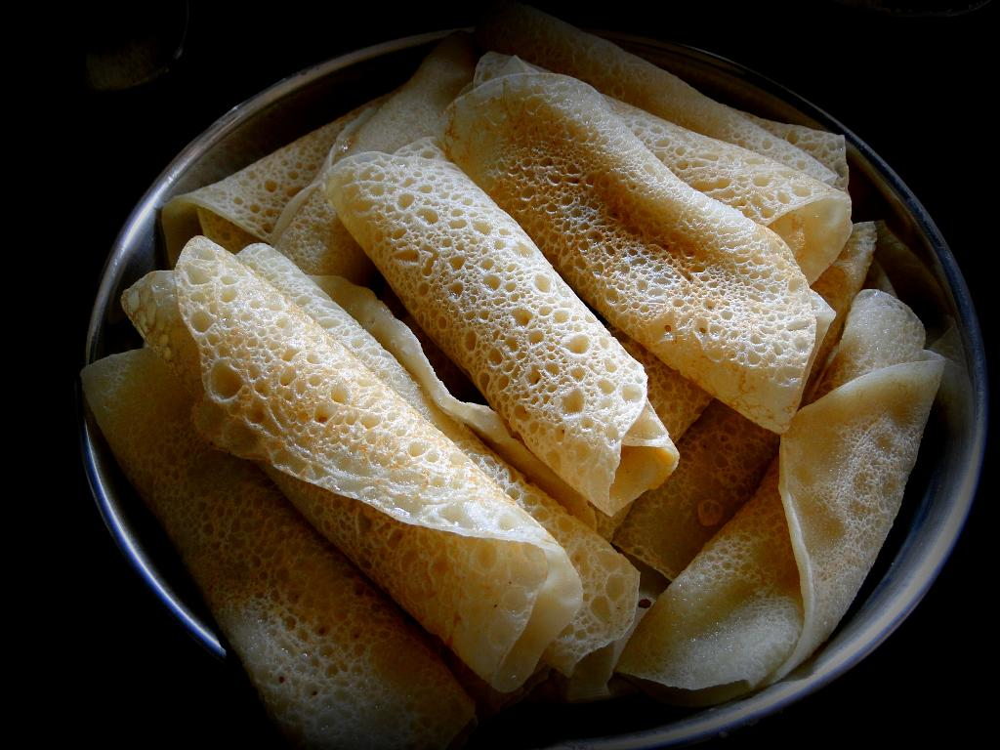

Home
Patishapta Pitha

And Who doesn't enjoy some desserts ...
Patishapta Pitha is a Bengali cuisine which must be tried by all sweet lovers. It is a very popular Bengali sweet dish
prepared on the auspicious day of Makar Sankranti or Poush Parbon. It is specially garnished with green cardamom powder
and granulated sugar/jaggery. The main ingredients of this dessert are refined flour and semolina. It can be preferred on
several occasions like kitty party and birthdays. It is mixed with milk which is a part of the staple diet for many.
Hence, it makes it slightly nutritious. Step in your kitchen today and try out this mouth-watering recipe today with your
family and friends. This festival season, make sure you enjoy the fresh and moist bites of this Bengali sweet dish.
Ingredients
- Sooji (suji or semolina) 250 grams
- White flour (maida) 400 grams
- Suger 200 grams
- Kheer (Khowa) 300 grams
- Cooking oil 3 tablespoon
- Milk 1 liter
Recipie Instructions
- Condense the milk by constantly boiling and stirring. Add Khowa along with 50 grams of sugar to make it easier to turn the same into semi liquid state. Note - If khowa is not available then add more milk. It will take a lot of time to change to a semi-liquid state
- Add water( about 2 - 2½ cups) gradually in maida and suji to make a thick mix. Add 200 grams of sugar.
- Heat the frying pan and coat the surface of the pan with little oil. Apply oil with a piece of eggplant or bottle gourd or a piece of cotton.
- Pour the suji-maida mix about (about 5 table spoon) on the hot pan and spread the mix on the pan till it takes a circular shape.
- Put about 1 tablespoon of the semi liquid kheer on the over the spread
- Roll the spread like bread roll after 15-20 sec. Keep the roll on the pan and flip sides every 5-10 secs till it turns brownish.
- Enjoy!
Return to Home